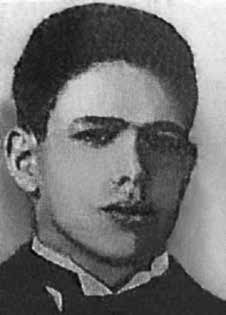

Augusto
Soares
da Cunha
CIRCUNSTÂNCIAS DA MORTE
Augusto Soares da Cunha morreu no dia 1o de abril de 1964, quando ele e seu pai, Otávio, sofreram um atentado em Governador Valadares. Augusto morreu imediatamente. Seu pai, três dias depois. Seu irmão, Wilson Soares da Cunha, ficou gravemente ferido na mesma ocasião.
As mortes foram decorrentes da atuação de três fazendeiros – Wander Campos, Maurílio Avelino de Oliveira e Lindolfo Rodrigues Coelho –, cuja ação se dava em nome do Estado, especificamente a pedido do delegado coronel Paulo Reis. Segundo um dos assassinos, Wander Campos, Otávio e o filho teriam sido mortos por terem supostamente descumprido uma ordem de prisão determinada pelo coronel da Polícia Militar Pedro Ferreira dos Santos e pelo delegado Paulo Reis.
De acordo com a esposa de Wilson e com Eunice Ferreira da Silva, empregada doméstica na residência da família, e segundo as declarações de Wander, Maurílio e Lindolfo, os três fazendeiros dirigiram-se à casa de Wilson no dia 1o de abril. Lá chegando, Maurílio Avelino de Oliveira, antigo amigo da família, aproximou-se de um jipe onde se encontravam Augusto, seu pai Otávio e o irmão Wilson. Nesse momento, os fazendeiros retiraram a chave da ignição do veículo e começaram a atirar contra as vítimas. Augusto morreu na hora. Seu pai, Otávio, então com 70 anos, já atingido, ainda teve forças para sair do veículo, arrastando-se para tentar se refugiar no interior da casa, mas foi perseguido por Lindolfo, que atirou em seu rosto. Foi levado ao hospital, mas não resistiu, morrendo três dias depois. Wilson, mesmo gravemente ferido, sobreviveu.
Os três fazendeiros envolvidos foram também ao hospital em busca de outro filho de Otávio, o médico Milton Soares, mas ele foi protegido por colegas médicos e enfermeiros. Posteriormente, esclareceu-se que o alvo principal da incursão do referido grupo de fazendeiros, a mando do coronel Paulo Reis, era Wilson, apoiador de atividades em defesa da reforma agrária promovidas por Francisco Raimundo da Paixão, o Chicão (sapateiro e presidente do Sindicato dos Trabalhadores Rurais de Governador Valadares). Ademais, Wilson mantinha ligações políticas com o jornalista Carlos Olavo, reconhecido nacionalmente por defender as reformas de base e o governo João Goulart por meio do jornal O Combate, de Governador Valadares.
Na documentação consultada pela Comissão Nacional da Verdade não há informações sobre os seus restos mortais.
Augusto Soares da Cunha died on April 1, 1964, when he and his father, Otávio, suffered an attack in Governador Valadares. Augustus died immediately. His father, three days later. His brother, Wilson Soares da Cunha, was seriously injured on the same occasion.
The deaths were the result of the actions of three farmers – Wander Campos, Maurílio Avelino de Oliveira and Lindolfo Rodrigues Coelho –, whose action was in the name of the State, specifically at the request of delegate Colonel Paulo Reis. According to one of the killers, Wander Campos, Otávio and his son were killed for allegedly failing to comply with an arrest order ordered by Military Police colonel Pedro Ferreira dos Santos and police chief Paulo Reis.
According to Wilson's wife and Eunice Ferreira da Silva, a domestic worker at the family residence, and according to statements by Wander, Maurílio and Lindolfo, the three farmers went to Wilson's house on April 1st. Arriving there, Maurílio Avelino de Oliveira, an old family friend, approached a jeep containing Augusto, his father Otávio and brother Wilson. At that moment, the farmers removed the vehicle's ignition key and began shooting at the victims. Augusto died instantly. His father, Otávio, then 70 years old, already shot, still had the strength to get out of the vehicle, crawling to try to take refuge inside the house, but was chased by Lindolfo, who shot him in the face. He was taken to the hospital, but did not survive, dying three days later. Wilson, despite being seriously injured, survived.
The three farmers involved also went to the hospital in search of Otávio's other son, doctor Milton Soares, but he was protected by fellow doctors and nurses. Later, it was clarified that the main target of the incursion by the aforementioned group of farmers, at the behest of Colonel Paulo Reis, was Wilson, a supporter of activities in defense of agrarian reform promoted by Francisco Raimundo da Paixão, known as Chicão (shoemaker and president of the Rural Workers Union of Governador Valadares). Furthermore, Wilson maintained political links with journalist Carlos Olavo, nationally recognized for defending basic reforms and the João Goulart government through the newspaper O Combate, owned by Governador Valadares.
In the documentation consulted by the National Truth Commission there is no information about his remains.
Augusto Soares da Cunha murió el 1 de abril de 1964, cuando él y su padre, Otávio, sufrieron un atentado en Governador Valadares. Augusto murió inmediatamente. Su padre, tres días después. Su hermano, Wilson Soares da Cunha, resultó gravemente herido en la misma ocasión.
Las muertes fueron resultado de las acciones de tres agricultores – Wander Campos, Maurílio Avelino de Oliveira y Lindolfo Rodrigues Coelho –, cuya acción fue en nombre del Estado, específicamente a pedido del delegado coronel Paulo Reis. Según uno de los asesinos, Wander Campos, Otávio y su hijo fueron asesinados supuestamente por incumplir una orden de arresto ordenada por el coronel de la Policía Militar Pedro Ferreira dos Santos y el jefe de policía Paulo Reis.
Según la esposa de Wilson y Eunice Ferreira da Silva, empleada doméstica de la residencia familiar, y según declaraciones de Wander, Maurílio y Lindolfo, los tres agricultores fueron a la casa de Wilson el 1 de abril. Al llegar allí, Maurílio Avelino de Oliveira, un viejo amigo de la familia, se acercó a un jeep en el que viajaban Augusto, su padre Otávio y su hermano Wilson. En ese momento, los campesinos quitaron la llave de contacto del vehículo y comenzaron a disparar contra las víctimas. Augusto murió instantáneamente. Su padre, Otávio, entonces de 70 años, ya baleado, aún tuvo fuerzas para salir del vehículo, arrastrándose para intentar refugiarse dentro de la casa, pero fue perseguido por Lindolfo, quien le disparó en la cara. Fue llevado al hospital, pero no sobrevivió y murió tres días después. Wilson, a pesar de estar gravemente herido, sobrevivió.
Los tres agricultores implicados también acudieron al hospital en busca del otro hijo de Otávio, el médico Milton Soares, pero estaba protegido por otros médicos y enfermeras. Posteriormente, se aclaró que el principal objetivo de la incursión del citado grupo de agricultores, a instancias del coronel Paulo Reis, era Wilson, partidario de las actividades en defensa de la reforma agraria impulsada por Francisco Raimundo da Paixão, conocido como Chicão (zapatero y presidente del Sindicato de Trabajadores Rurales de Governador Valadares). Además, Wilson mantuvo vínculos políticos con el periodista Carlos Olavo, reconocido a nivel nacional por defender reformas básicas y el gobierno de João Goulart a través del periódico O Combate, propiedad del Governador Valadares.
En la documentación consultada por la Comisión Nacional de la Verdad no hay información sobre sus restos.